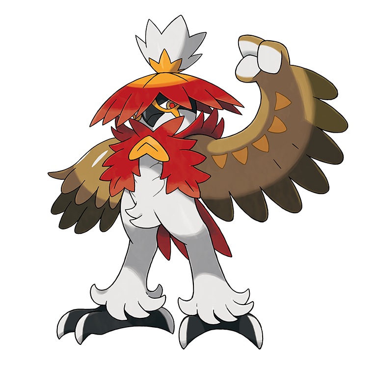

Rowlet, Pokemon ostry liść. Typ trawiasty i latający.
Magazynuje energię w ciągu dnia z fotosyntezy.
Posyła w ataku swoje pióra, które są ostre jak ostrza.
Jego nogi są mocne, więc jego kopnięcia są również potężne.
Opada w dół bez wydawania dźwięku i uwalnia potężnego kopniaka,
nie będąc zauważonym. Czuje się zrelaksowany w ciasnych,
ciemnych miejscach i jest znany z używania kieszeni lub torby trenera jako gniazda.
Dartrix
Dartrix, Typ trawiasty i latający.
Ewoluuje z Rowleta. Rzuca we wrogów strzałkami,
które są bardzo ostrymi piórami. Całkiem świadomy wizerunku,
zawsze się pławi. Ta narcystyczna sowa jest czystym dziwakiem.
Jeśli nie będziesz go pilnie pielęgnować, przestanie cię słuchać.
Niezwykle wrażliwy na obecność innych, potrafi wykryć stojących
za nim przeciwników i rzucać ostrymi piórami, by ich wybić.
Decidueye
Decidueye Typ Trawiasty i duchowy.
Jego kaptur na głowie pomaga mu w zachowaniu celności gdy
wystrzeliwuje ze swoich skrzydeł liścio-strzały z taką precyzją,
że mogą przebić kamyk na odległość ponad stu metrów.
Decidueye może nałożyć i wystrzelić strzałę we wroga w ciągu jednej dziesiątej sekundy,
więc jego bitwy są rozstrzygane w mgnieniu oka. Choć przeważnie jest chłodny i ostrożny,
kiedy zostaje zaskoczony, ogarnia go wielka panika.
Decidueye Hisuaiński

Hisuiański Decidueye ewoluował w typ Trawiasty i Walczący, by być zaciekłym i dzielnym wojownikiem,
aby przetrwać w surowym środowisku regionu. Nie ma określonego terytorium.
Zamiast tego wędruje w poszukiwaniu pożywienia, aby przetrwać.
W przeciwieństwie do swojego poprzednio odkrytego wyglądu,
ma tendencję do celowego angażowania się w walkę na bliskim dystansie.
Wydaje się jednak, że toleruje tych, którzy nie wykazują wobec niej wrogości.